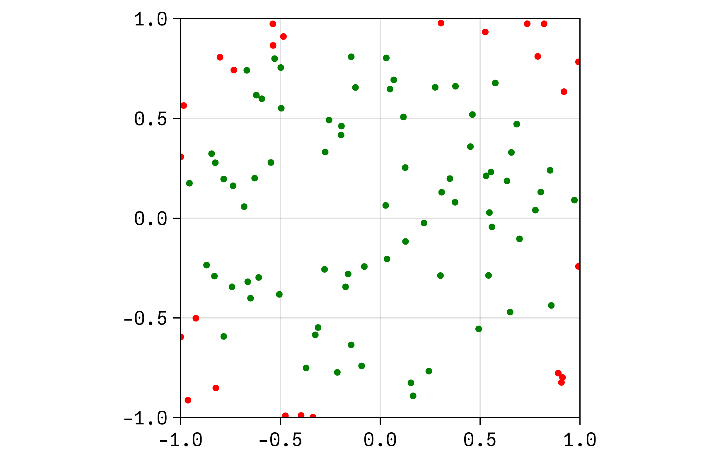
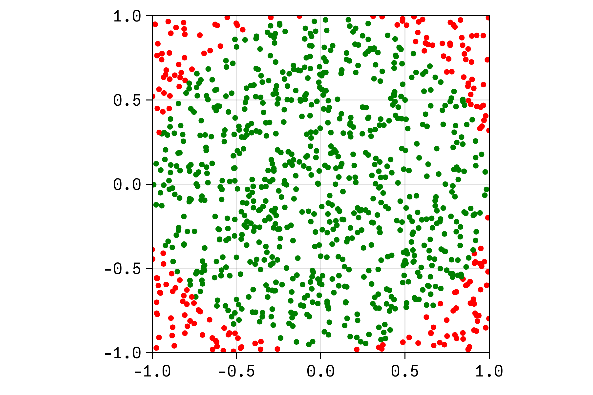
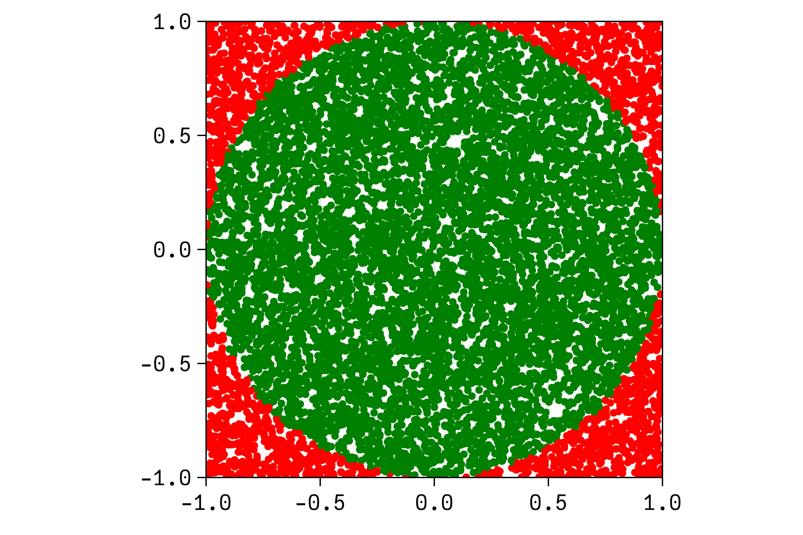
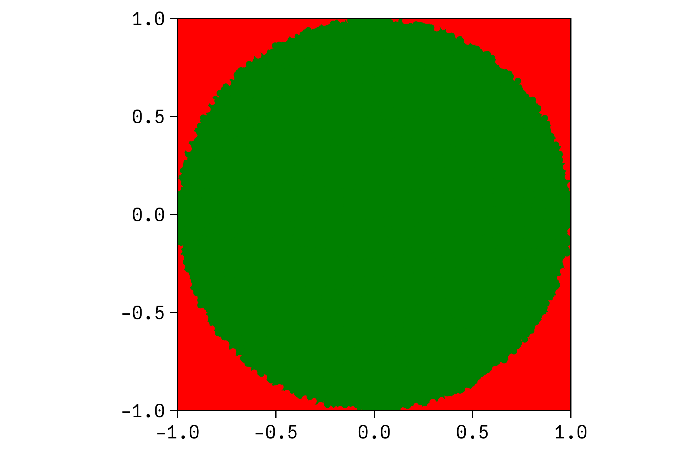

function solvemontecarlo(step::Function, N::Int)
results = []
for i in 1:N
push!(results, step())
end
return results
endsolvemontecarlo (generic function with 1 method)Alexander Smolka ![]()
For additional information about the use of the Monte Carlo method in the ExESS research project, please refer to respective parts in the documentation.

\newcommand{\n}[1]{\begin{tabular}{c}#1\end{tabular}}
\renewcommand{\vec}[1]{\boldsymbol{\mathbf{#1}}}
\pgfdeclarelayer{background}
\pgfdeclarelayer{foreground}
\begin{tikzpicture}[
main/.style={draw, thick, rounded corners=4pt, inner sep=2pt, minimum size=20pt, minimum width=25pt, fill=white},
decision/.style={draw, diamond, aspect=2, thick, rounded corners=2pt, inner sep=3pt, minimum size=20pt, minimum width=25pt, fill=white},
]
%::. main nodes
\node[main] (START) at (0,0) {Start of Monte Carlo Simulation};
\node[main, below = 1 of START] (INIT) {\n{Initialization of Monte Carlo \\ Simulation (e.g. setting of \\ global parameters)}};
\node[decision, below = 1 of INIT] (CHECKSTEP) {};
\node[main, below = 1 of CHECKSTEP, very thick] (STEP) {\n{\vspace{5mm}\\\textbf{Monte Carlo Step}\\\vspace{5mm}}};
\node[main, right = 1 of STEP] (END) {\n{End of\\Monte Carlo Simulation}};
%::. connections
\draw[-latex, thick] (START) -- (INIT);
\draw[-latex, thick] (INIT) -- node[midway, right] {$i=1$} (CHECKSTEP);
\draw[-latex, thick] (CHECKSTEP) -- node [midway, right] {$i\leq N$} (STEP);
\draw[-latex, thick] (STEP.250) |- ($(STEP.250) + (-2, -1)$) |- node[near start, left] {$i\mapsto i+1$} (CHECKSTEP.180);
\draw[-latex, thick] (STEP.290) -- ($(STEP.290) + (0, -1.3)$) node[at end, below] {\n{\emph{save step }\\\emph{results in file}}};
\draw[-latex, thick] (CHECKSTEP.0) -| node[near start, above] {$i>N$} (END.90);
\end{tikzpicture}function solvemontecarlo(step::Function, N::Int)
results = []
for i in 1:N
push!(results, step())
end
return results
endsolvemontecarlo (generic function with 1 method)function step()
x, y = rand(2)*2 .- 1
return x^2 + y^2 <= 1 ? 1 : 0
endstep (generic function with 1 method)What does this specific stepping function do? It draws two positional arguments, x and y, from a uniform distribution between -1 and 1. Then it checks whether the point is inside the unit circle. If so, it returns 1, otherwise 0. The result is a vector of 1s and 0s, which can be interpreted as a Bernoulli distribution. The results look something like this:

N=100
N=1000
N=10000
N=100000using CairoMakie
function plotMC(N::Integer)
fig = Figure()
ax = Axis(fig[1,1];
aspect=DataAspect())
for _ in 1:N
x, y = rand(2)*2 .- 1
if x^2 + y^2 <= 1
scatter!(ax, x, y, color=:green)
else
scatter!(ax, x, y, color=:red)
end
end
xlims!(ax, (-1,1))
ylims!(ax, (-1,1))
save(joinpath(@__DIR__, @sprintf("%07i.png", N)), fig, px_per_unit=4)
return nothing
end
plotMC.([100,1000,10000,100000])Note that the code above uses a custom theme loaded in the preamble of the document.
We can now use the results to estimate the value of \(\pi\). The area of the unit circle is \(\pi\), the area of the square is 4. The ratio of the areas is thus \(\pi/4\). The ratio of the number of points inside the circle to the total number of points is an estimate of the ratio of the areas. We can thus estimate \(\pi\) as follows:
using Statistics
res = solvemontecarlo(step, 1_000_000)
µ = mean(res)
pi_estimation = µ * 43.14334Two important packages that can improve the workflow with Monte Carlo simulations are ProgressMeter and Distributed. The former allows to display of a progress bar, the latter allows simulating in parallel on multiple cores/workers. Both packages offer a simple interface that can be used through a macro that can be placed in front of the for-loop inside of the Monte Carlo solving function:
# progress meter and parallel computing
@showprogress @distributed for i in 1:N
# only progress meter
@showprogress for i in 1:N
# only parallel computing
@distributed for i in 1:N